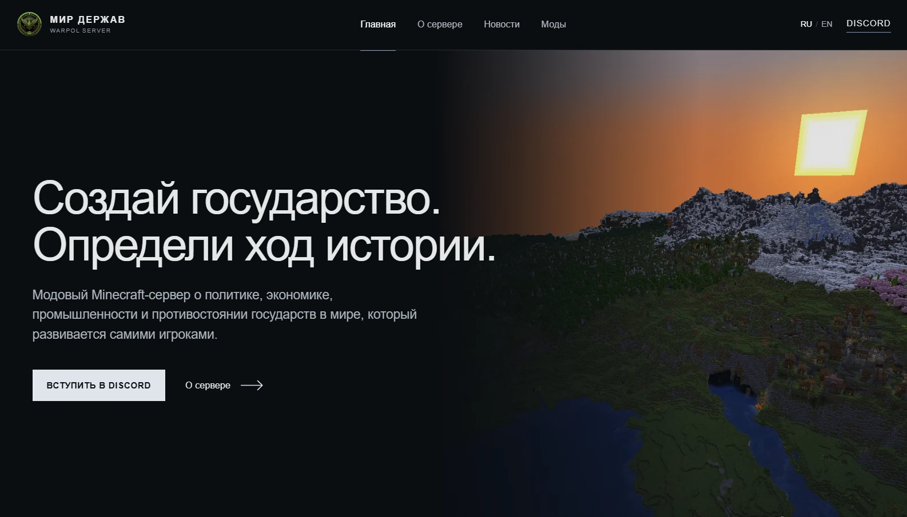

Запущен новый сайт проектаThe project website is live
У Военно‑Политического сервера появился официальный сайт. Теперь новости разработки, информация о мире, актуальный список модов и будущая интерактивная карта собраны в одном месте.
Сайт будет развиваться вместе с проектом. После подключения серверной карты здесь появятся государства, города, границы и другие данные из игрового мира. Также на сайте будет опубликована ссылка для загрузки готового мод-пака.
Все важные объявления и даты тестирования по-прежнему будут дублироваться в Discord.
The Military-Political server now has an official website. Development news, world information, the current mod list and the future interactive map are now collected in one place.
The website will develop together with the project. Once the server map is connected, states, cities, borders and other in-game data will appear here. A download link for the complete modpack will also be published.
All important announcements and test dates will continue to be posted in Discord.
